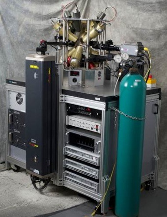
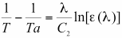

Who is PPM?
PPM was started by Paul Nordine in 2008, continuing specific R&D formerly performed by Containerless Research, Inc. since 1993.What does PPM Do?
We supply instruments for materials research that apply non-contact methods for synthesis, processing, material property measurements and true temperature measurements at extreme temperatures. For example, analyzing liquids at temperatures above 3000°C, or deeply undercooled to temperatures far below the melting point. PPM's two primary products are the Aero-Acoustic Levitator and the Division of Amplitude Photopolarimeter.

Aero-Acoustic Levitator
The AAL1,2 was developed with support from the U.S. National Science Foundation (NSF) during the 1990’s. It is based on acoustic3-6 and gas jet7-9 levitation technology developed during 1970-90 with support from NSF and the U.S. National Aeronautics and Space Administration and used in Space Lab experiments. The AAL instrument developed by PPM is a complete system with digital electronics and controls, kHz optical pyrometry for temperature measurements, kHz video recording, and advanced software and algorithms that improve performance and control of the instrument. The AAL suspends liquids without a container at temperatures in excess of 3000°C. It allows deep undercooling of liquids to investigate material properties under conditions far from phase equilibrium, and to form glasses of novel material compositions. Example applications of the AAL are in the study of:- Materials processing and property measurements at temperature in excess of 3000°C;
- Undercooled liquids at temperatures far-below the melting point
- Liquids that could form in nuclear reactor accidents
- Ceramic superconductors in the liquid state
- Reluctant glass-forming materials
- Volcanic liquids
- Molten effluents of rocket engines

Division of Amplitude Photopolarimeter
The DOAP10,11 obtains emissivity data needed for accurate non-contact temperature measurements on levitated samples. It does so by an ellipsometric measurement of the optical properties of the material from which emissivity values can be calculated. See, for example, Refs. 12-14. The DOAP is comprised of two components, the Polarization State Generator (PSG) and the Polarization State Detector (PSD). The PSG is used to calibrate the PSD for precise measurement of the complete polarization state of detected light. For optical property measurements, linearly polarized light from the PSG is reflected from levitated samples, and the reflected light is measured by the PSD at a known included angle. For measurements on levitated liquids, precise alignment is not required. The curved surface always sends light to the PSD. Thus, accurate determination of sample temperatures by non-contact techniques require two measurements. First, a precise measurement of apparent temperature, Ta, is obtained by optical pyrometry. This temperature differs from the true temperature, T, depending on the material emissivity. For narrow-band optical pyrometry at a wavelength, λ, in the Wein’s law regime, with emissivity, ε(λ), the true temperature is given by:  with temperatures in degrees Kelvin (K), C2 = 1.4388 cm K. The emissivity correction can be substantial. For example, with T = 3000K, λ = 650 nm, and ε(λ) = 0.5, Ta would equal 2742K. The DOAP employs a modulated light source and narrow-band filters to eliminate interference by incandescent light from hot samples. It is capable of measurements at kHz rates, so that true temperature and optical property values are obtained in rapid cooling and heating experiments.References
- Weber, J.K.R., D. S. Hampton, D. R. Merkley, C. A. Rey, M. M. Zatarski, and P. C. Nordine, "Aero-acoustic levitation - A method for containerless liquid-phase processing at high temperatures," Rev. Sci. Instrumen. 65, 456-465 (1994).
- Weber, J.K.R., J.J. Felten, B. Cho and P.C. Nordine, "Design and Performance of the Aero-Acoustic Levitator, J. Jpn. Soc. Microgravity Appl. 13, 27-35 (1996).
- Merkley, D.R., C.A. Rey, T.J. Danley, Method and apparatus for stabilizing levitated objects, US Patent 5,257,676 (1992).
- Rey, C.A. and D.R. Merkley, Aero-acoustic levitation device and method, US Patent 5,096,017 (1991).
- Danley, T.J., D.R. Merkley, C.A. Rey, Method and apparatus for acoustic levitation, US Patent 5,036,944 (1991).
- Danley, T.J, D.R. Merkley, C.A. Rey, Transducer for producing sound of very high intensity, US Patent 4,757,227 (1988).
- Rosner, D. E., and P. C. Nordine, "Mass Transport Requirements and a New Technique for Studying the Intrinsic Kinetics of High Temperature Gas/Liquid Reactions," in R. M. Fisher, R. A. Oriani, and E. T. Turkdogan, eds., Physical Chemistry in Metallurgy, Proceedings of the Darken Conference, U.S. Steel Corporation, Monroeville, Pennsylvania (1976), pp. 496-499.
- Winborne, D. A., P. C. Nordine, D. E. Rosner, and N. F. Marley, "Aerodynamic Levitation Technique for Containerless High Temperature Studies on Isolated Liquid and Solid Samples," Metall. Trans. 7B, 711 (1976).
- Nordine, P. C., and R. M. Atkins, "Aerodynamic Levitation of Laser Heated Solids in Gas Jets," Rev. Sci. Instrumen. 53, 1456 (1982).
- S. Krishnan, "Calibration, Properties, and Applications of the Division-of-Amplitude Photopolarimeter at 632.8 and 1523 nm", J. Opt. Soc. Am. A9, 1615-1622 (1992).
- Krishnan, S., and P. C. Nordine, "Mueller-Matrix Ellipsometry using the Division-of-Amplitude Photopolarimeter: A study of Depolarization Effects," Appl. Optics 33, 4184-92 (1994).
- Krishnan, S., J. K. R. Weber, R. A. Schiffman, P. C. Nordine, and R. A. Reed, "Refractive Index of Liquid Aluminum Oxide at 0.6328 μm," J. Am. Ceram. Soc. 74, 881 (1991).
- S. Krishnan, C. D. Anderson, J. K. R. Weber, P. C. Nordine, W. H. Hofmeister, and R. J. Bayuzick, "Optical Properties and Spectral Emissivities at 632.8 nm in the Titanium-Aluminum System," Metall. Trans 24A, 67-72 (1993).
- R.I. Sheldon, G.H. Rinehart, J.C. Lashley, C.E. Van Pelt, P.C. Nordine, S. Krishnan, J.K.R. Weber, "The optical properties of liquid plutonium at 632.8 nm", J. Nucl. Mat. 312, 207 211 (2003).